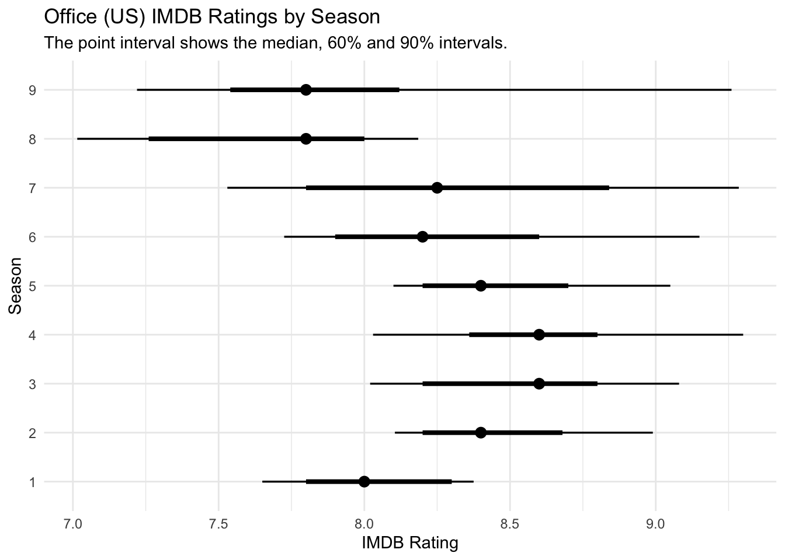
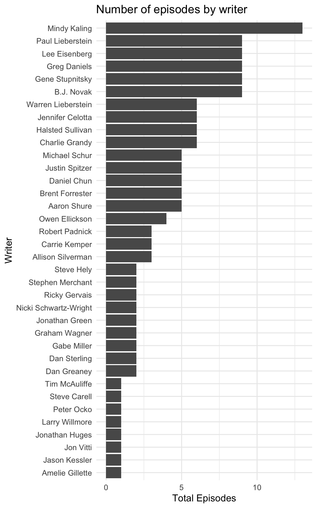
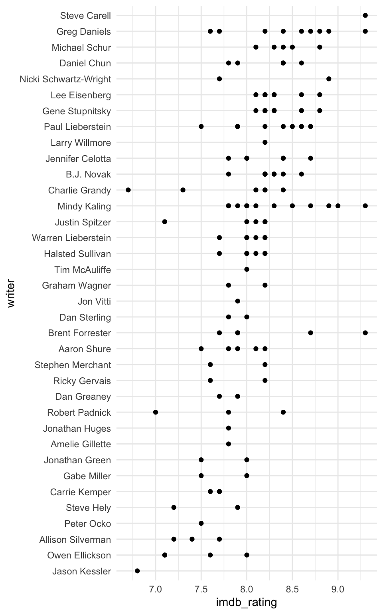
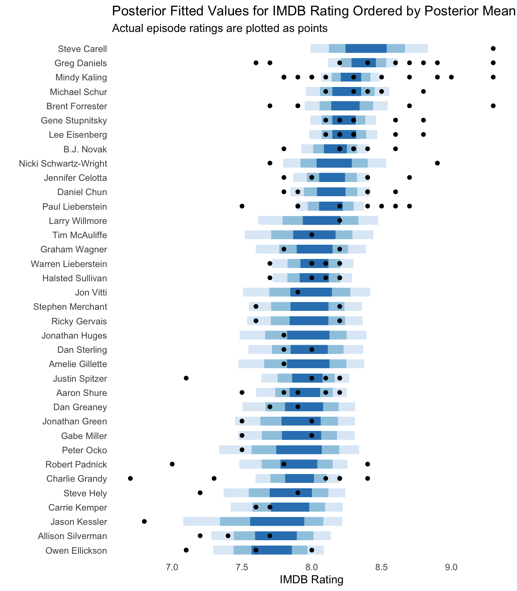

office <- tidytuesdayR::tt_load(x = 2020, 12)
Downloading file 1 of 1: `office_ratings.csv`episode_ratings <- office$office_ratingsJonny Law
March 17, 2020
First we download the ratings for each office episode using the tidytuesdayR package.
Downloading file 1 of 1: `office_ratings.csv`We can use glimpse from the tibble package to see the column types and some example data from the head of the table.
Rows: 188
Columns: 6
$ season <dbl> 1, 1, 1, 1, 1, 1, 2, 2, 2, 2, 2, 2, 2, 2, 2, 2, 2, 2, 2, 2…
$ episode <dbl> 1, 2, 3, 4, 5, 6, 1, 2, 3, 4, 5, 6, 7, 8, 9, 10, 11, 12, 1…
$ title <chr> "Pilot", "Diversity Day", "Health Care", "The Alliance", "…
$ imdb_rating <dbl> 7.6, 8.3, 7.9, 8.1, 8.4, 7.8, 8.7, 8.2, 8.4, 8.4, 8.2, 8.2…
$ total_votes <dbl> 3706, 3566, 2983, 2886, 3179, 2852, 3213, 2736, 2742, 2713…
$ air_date <date> 2005-03-24, 2005-03-29, 2005-04-05, 2005-04-12, 2005-04-1…Firstly, I will plot the distribution of ratings by season. We can see that the ratings dropped after season 8 when Steve Carell left the show.
episode_ratings %>%
group_by(season) %>%
tidybayes::median_qi(imdb_rating, .width = c(0.6, 0.9)) %>%
ggplot(aes(x = imdb_rating, xmin = .lower, xmax = .upper, y = as.factor(season))) +
tidybayes::geom_pointinterval() +
labs(
title = "Office (US) IMDB Ratings by Season",
subtitle = "The point interval shows the median, 60% and 90% intervals.",
y = "Season",
x = "IMDB Rating"
)
Using the schrute package we can get every line of dialogue and additional episode information including the writers and the directors.
Next, I wanted to see the number of episodes per writer.
writers <- script %>%
mutate_at(vars(season, episode), as.numeric) %>%
inner_join(episode_ratings, by = c("season", "episode", "imdb_rating")) %>%
separate(writer, into = paste0("writer", 1:3), sep = ";") %>%
select(season, episode, episode_name, imdb_rating, contains("writer")) %>%
distinct() %>%
pivot_longer(contains("writer"), names_to = "name", values_to = "writer") %>%
drop_na() %>%
mutate(true = TRUE) %>%
pivot_wider(names_from = writer, values_from = true) %>%
mutate_if(is.logical, ~ !is.na(.)) %>%
group_by(season, episode, episode_name, imdb_rating) %>%
summarise_if(is.logical, sum)
episodes_per_writer <- writers %>%
ungroup() %>%
select(-c(1:4)) %>%
summarise_all(sum) %>%
gather(key = writer, value = total_episodes)
episodes_per_writer %>%
mutate(writer = forcats::fct_reorder(writer, total_episodes)) %>%
ggplot(aes(x = total_episodes, y = writer)) +
geom_col() +
labs(title = "Number of episodes by writer",
y = "Writer", x = "Total Episodes")
Next, I would like to see which writers produce the highest rated episodes. Determining the writer who writes the best episodes is challenging since writers often collaborate and some writers have only written a handful of episodes. Initially I plotted the IMDB rating for each episode written by each writer regardless of who they collaborated with.
Steve Carell appears to have the highest median episode rating, however he has written only two episodes! It looks like Greg Daniels is the real MVP, with many consistently well received episodes.
writers_by_episode <- writers %>%
ungroup() %>%
pivot_longer(-c(1:4), names_to = "writer", values_to = "written") %>%
filter(written == 1)
writers_by_episode %>%
mutate(writer = forcats::fct_reorder(writer, imdb_rating)) %>%
ggplot(aes(x = imdb_rating, y = writer)) +
geom_point()
We could fit a hierarchical model to the rating by writer using the BRMS package which uses Stan to perform full Bayesian inference for hierarchical distributional models. The hierarchical model allows the ratings to be shared across writers, hence writers with a small number of episode credits will be pulled towards the overall mean rating of all episodes. The model specification can be written as
\[\begin{aligned} \mathbf{Y} &\sim \textrm{Beta}(\mu\phi, (1 - \mu)\phi), \\ \mu &= \mathbf{X}\beta + \mathbf{Z}\nu, \\ p(\beta) &= \mathcal{N}(0, 5^2) \\ p(\nu) &= \mathcal{N}(0, \sigma^2) \\ p(\sigma) &= \frac{1}{2}t(3, 0, 10) \\ p(\phi) &= \textrm{Gamma}(0.01, 0.01). \end{aligned}\]
Where \(Y\) represents the scaled IMDB rating (\(Y = \textrm{IMDB Rating} / 10\)). The parameters we wish to estimate include \(\beta\), which is the latent population-level effect and \(\nu\) which is the latent group-level effect. The Beta distribution has support in \([0, 1]\) so the ratings are scaled by dividing by ten. We can recover the true scale by multiplying by 10 when considering the posterior fitted values. The response Beta distribution is parameterised such that the mean is \(\mu\) and the variance is \(\operatorname{Var}(Y) = \mu(1-\mu)/(1+\phi)\) so the variance of the response decreases as \(\phi\) increases, \(\phi\) is known as a precision parameter for the Beta distribution. The design matrix \(X\) contains the intercept representing the overall mean IMDB rating. The design matrix \(Z\) is a matrix containing ones.
There are 40 group level effects, drawn from a Normal distribution with standard deviation \(\sigma\). \(\sigma\) has a half student-t prior which controls the regularisation of the group level effects. Effectively the level of regularisation for the group level effects is learned from the data. The Stan wiki provides a good reference to the literature on prior choices.
First rescale the rating to be between zero and one.
To define and fit the model use the brm function. The formula rating ~ (1 | writer) specified that we want a group-level effect for each writer. The population level intercept is included by default. The response family is specified to be the Beta distribution and the prior distribution for the population intercept is specified as a Normal distribution with mean 0 and standard deviation 5. The other priors are default and specified above.
The model is fit using Hamiltonian Monte Carlo, the sampling code is written in C++. If you are familiar with Stan, you can extract the Stan code from the model using stancode(fit).
Next we plot the posterior fitted values using the tidybayes package and overlay the actual episode ratings using points. Those with fewer writing credits have a larger posterior credible interval.
add_fitted_draws(newdata = model_data, model = fit) %>%
mutate(fitted_rating = .value * 10) %>%
median_qi(fitted_rating, .width = c(.95, .8, .5)) %>%
ungroup() %>%
mutate(writer = forcats::fct_reorder(writer, fitted_rating)) %>%
ggplot(aes(y = writer, x = fitted_rating)) +
geom_interval(aes(xmin = .lower, xmax = .upper)) +
geom_point(aes(x = imdb_rating), data = writers_by_episode) +
scale_color_brewer() +
labs(
title = "Posterior Fitted Values for IMDB Rating Ordered by Posterior Mean",
subtitle = "Actual episode ratings are plotted as points",
x = "IMDB Rating",
y = ""
) +
theme(legend.position = "none") +
theme(panel.grid.major = element_blank(), panel.grid.minor = element_blank())
Now use the rtweet library to post the plots directly to Twitter without leaving R. You must connect to the Twitter API using OAuth as described in this vignette, I set the Twitter application keys in my .Renviron file which is never committed to public version control (this can be easily edited using usethis::edit_r_environ()).
The function post_tweet can be used to post a new tweet.
post_tweet(
status = "This week's #TidyTuesday data is from the US Office TV series. I've fit a simple Bayesian hierarchical model using Stan and BRMS to determine which writers produce the highest rated episodes. Full code: https://jonnylaw.rocks/blog/tidy-tuesday-the-office/ #rstats",
media = c("brms_ratings_by_writer.png", "ratings_by_writer.png"),
token = token
)@online{law2020,
author = {Jonny Law and Jonny Law},
title = {Tidy {Tuesday:} {The} {Office}},
date = {2020-03-17},
langid = {en}
}